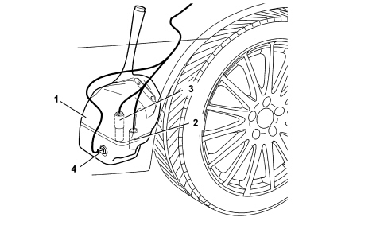
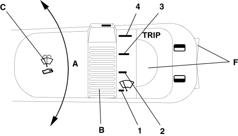
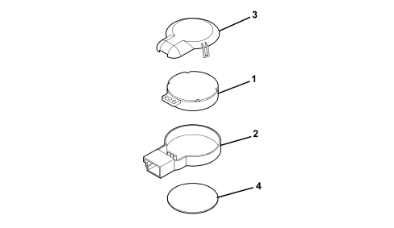

SPECIFICATIONS
The vehicle is equipped with a system that cleans and washes the front windscreen. The vehicle may be fitted as an option with a pressurised liquid washing system for the front headlamps.
Reservoir
The reservoir is located in the left side of the wheel arch compartment and it allows the screen washer system pump to supply the water-antifreeze mixture required to clean the front window. If the vehicle is equipped with the relevant option, it also supplies the headlamp washer system via a special pump.
The reservoir capacity ensures a minimum of 25 washing cycles and it ranges in size from a minimum of 5 litres for the version without a headlamp washer to up to 6 litres if equipped with a headlamp washer.
The reservoir is made out of plastic and contains external housings for the pump that supplies the windscreen washer and headlamp washers (if fitted).
The reservoir also has a sensor that signals a decrease in the level by means of a special warning light in the instrument panel.

1 - Windscreen washer fluid reservoir
2 - Pump supplying fluid to the nozzles
3 - Headlamp washer system pump (if present)
4 - Screen washer fluid level sensor
Controls

A - Windscreen wiper
B - Windscreen wiper intermittent operation / rain sensor setting (if present) selector
C - Windscreen washer
D - Rearscreen wiper (station wagon only)
E - Rearscreen washer (station wagon only)
F - TRIP buttons
Windscreen wiper
The traditional windscreen wiper system features the use of flat blades.
These blades, made from rubber with a metal edge and an upper spoiler, allow a considerable reduction in wind noise whilst driving.
Because of the even distribution of the load on the windscreen, made possible by their shape, flat blades allow a high degree of wiping for all positions of the blade on the windscreen and the phenomenon of "jumping" which may occur in certain usage conditions is restricted.
In addition, the use of a reasonable size electric windscreen wiper motor allows high performance in terms of wiping speed.
The system has 2 continuous speeds and 4 adjustable, intermittent speeds.
Operating strategy
The windscreen wiper motor can be activated in the following modes using the windscreen wiper control on the steering column switch unit:
- anti-panic;
- intermittent;
- 1st continuous speed (45 +/- 5 strokes/minute);
- 2nd continuous speed. (65 +/- 5 strokes/minute);
If there is a rain sensor the intermittent mode is replaced by an automatic mode.
Anti-panic operation:
with the unstable type anti-panic windscreen wiper command, the steering column switch unit implements the 2nd windscreen wiper speed for the entire duration of the request.
If the blade does not return to the "park" position at the end of the command, the steering column switch unit activates the 1st motor speed until it has returned.
Intermittent operation:
on the intermittent windscreen wiper command, the steering column switch unit implements the 1st windscreen wiper motor speed intermittently with a pause between one stroke and the next that depends on the position of the windscreen wiper intermittent selector.
The steering column switch unit manages 4 intermittent modes to which the following times correspond:
|
position |
pause time [s] |
strokes per minute |
|
1 |
4.7 |
10 |
|
2 |
2.7 |
15 |
|
3 |
1.7 |
20 |
|
4 |
1.1 |
25 |
1st speed continuous operation:
on the windscreen wiper command for the 1st speed, the steering column switch unit activates the 1st windscreen wiper motor speed for the entire duration of the request until the blade returns to the park position.
2nd speed continuous operation:
on the windscreen wiper command for the 2nd speed, the steering column switch unit activates the 2nd windscreen wiper motor speed for the entire duration of the request until the blade returns to the park position.
Rain sensor
The rain sensor is a sensor with an infrared LED installed in the windscreen capable of detecting the presence of rain and, consequently, of managing the wiping of the windscreen depending on the water present on the glass.
Composition
The device consists of a sensitive element (1) containing infra red transmission elements and a reception element.
A containment structure (2) and a cover (3) that protects the sensitive element.
A contact disc (4) spready with silicone material (SilGel612) to bond it to the glass.

1 - Sensitive element
2 - Retaining structure
3 - Cover
4 - Contact disc

|
The layer of silicone material is protected by a film that is removed when the component is installed. Avoid touching with your hands to prevent damage to the silicone. Because it is not possile to disconnect and reconnect the part without damaging the silicone layer, the sensor should be replaced if the windscreen is replaced. |

|
If a new part is installed during service, check that no air bubbles remain between the glass and sensor, apply a load of at least 50N to ensure any bubbles emerge. |
The sensor should not be subjected to vibrations. Ensure there is no abnormal interference between the sensor and support elements except for the retaining clip.
Remove any silicone residues from the glass with acetone before fitting a new component.
The sensor is supplied at battery voltage 12V and the voltage of the signals sent by the sensor to the wiper control unit is 5 V.
The internal sensor resistance is 10 ohms.
Operation
The rain sensor is activated by placing the ring nut for the right steering column switch unit lever in the intermittent-automatic position (Auto command). the frequency of the windscreen wiper strokes is automatically adjusted depending on the amount of water on the windscreen. This frequency can vary from no stroke (no rain - windscreen dry) up to the second continuous speed (heavy rain - windscreen wet).
The sensitivity of the rain sensor can be altered using the windscreen wiper intermittent selector: from pos. 1: (MIN sensitivity) to pos. 4 (MAX sensitivity).
If the sensitivity is changed whilst the rain sensor is working, a windscreen wiper stroke is carried out to confirm the change.
|
|
If the vehicle is switched off with the lever left in the automatic intermittent position, the next time it is turned back on, no wiping cycle is carried out even if there is rain; this makes it possible to avoid accidental activation when the vehicle is switched on that could create dangerous situations (e.g. a passenger washing the windscreen by hand, the blades frozen to the glass). |
Recovery
If there is a malfunction with the rain sensor activated, the windscreen wiper operates intermittently with the adjustment equal to the setting made by the user for the rain sensor, irrespective of whether or not there is rain on the glass, whilst the instrument panel signals the sensor failure.
This allows the user to be aware of the incorrect operation of the sensor, however providing the performance required and allowing the possibility of activating the windscreen wiper in continuous mode (1st or 2nd speed).
Windscreen washer
The pump for washing the windscreen is two-way and is also used as the rearscreen washer pump (where fitted - station wagon version).
The activation of the windscreen washer control activates the pump for washing the screen for the entire time the control is activated, but.
Smart washing
Even if there is no screen wiping command (wiper lever in OFF position), the activation of the windscreen washer command (for at last 0.5 secs. permanently - thereby excluding accidental operation) activates the windscreen wiper in continuous mode at the 1st speed. For the entire time the washing command persists, the pump and the windscreen wiper remain activated; when the windscreen washer control is released, the pump stops working whilst the wiping continues until a further 3 strokes have been completed.
Activation of windscreen washer with rain sensor activated
If the windscreen washer control is activated, with the windscreen wiper controlled by the rain sensor, there are two possible behaviour modes:
- with the control activated for less than 0.5 secs.: only the pump is activated, whilst the windscreen wiper continues to be controlled by the sensor;
- with the control activated for more than 0.5 secs.: in addition to activating the pump, the steering column switch unit operates the windscreen wiper, independently of the rain sensor.